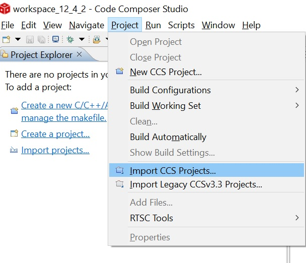

MSPM0 Universal FOC Software User’s Guide¶
1. CCS Project setup¶
Go to Import CCS Projects as shown below.
 Click Browse. Navigate to
C:\ti\mspm0_sdk_<SDK_Version>\examples\nortos\[LAUNCHPAD]\motor_control_universal_foc.Click Select Folder. Check the desired hardware board, and click Finish to import the project into your workspace.

Register Overview¶
The Universal FOC Library is structured to be interfaced through Specific Registers, the Registers will be periodically parsed by the application interface to convert to the FOC algorithm variables. This helps users to have a clear interface to the motor control software.
For using the FOC library the user need to use the 3 main registers namely UserCtrlRegs, UserInputRegs and UserStatusRegs. The Library exposes these registers through pointers.
The pointers for 3 registers:
pUserCtrlRegs
All the variables used for controlling the motor like speed input is present in this user controls structure
pUserInputRegs
All the configurations like different startup modes etc are present in the User input registers
pUserStatusRegs
Used for monitoring the algorithm status and algorithm variables
Configuring the Project¶
For running the motor we first need to configure the userInputRegs with the correct parameters.
There are 2 types of parameters present in the userInputRegs:
System parameters
This sets the motor parameters, and hardware defined parameters like Current base value, Voltage base value .etc. The system parameters are present in pUserInputRegs→systemParams.
Tuning parameters
All the other elements in the userInputRegs except systemParams are the tuning parameters. The tuning parameter helps to tune the motor to the desired performance. for example in mtrStartUp1 we can configure the startup methods like align, slow first start and IPD. Refer to the Tuning Document for more details.
The FOC library initializes the input registers to a default value it is present in the setUserDefaultMotorParameters() function in ISR.c file. The default motor parameters are for LVSERVOMTR motor available at ti.com .
Refer to the Tuning Document for details on configurations.
Starting the Project¶
Connect the hardware and turn on the power supply. There should be no more than 50mA on the power supply.
Click on the Build button.
 Project should build with no errors.
Project should build with no errors.Click on the Debug button.
Open the Expressions window and add the following global structures pointers.
pUserCtrlRegs
pUserInputRegs
pUserStatusRegs
Press Play
 to start the code.
to start the code.Enable “Continuous Refresh” in the Expressions window.

Refer to the Tuning Document for spinning and tuning the motor.
2. Register Map¶
1 UserCtrlRegs¶
Set of registers used to control the motor.
1.1 SpeedCtrl¶
Speed control register
SpeedCtrl |
Definition |
|---|---|
speedInput |
Speed Command in 15 bit value. Value to set = (Desired motor speed) x 32768/(Max motor speed) |
1.2 algoDebugCtrl1¶
Algorithm debug register 1
algoDebugCtrl1 |
Definition |
|---|---|
forceAlignAngleSrcSelect |
Force align angle state source select |
forceISDEn |
Halts after ISD is complete |
forceIPDEn |
Halts after IPD is complete |
forceSlowCycleFirstCycleEn |
Halts after slow first cycle is complete |
forceAlignEn |
Halts after align is complete |
closeLoopDis |
Disable open to closed loop transition |
forcedAlignAngle |
Align angle used in forced align |
clearFlt |
Clears all faults |
1.3 algoDebugCtrl2¶
Algorithm debug register 2
algoDebugCtrl2 |
Definition |
|---|---|
forceVQCurrLoopDis |
Vq applied when current loop and speed loop are disabled |
forceVDCurrLoopDis |
Vd applied when current loop and speed loop are disabled |
currLoopDis |
Disable current loop and speed loop |
statusUpdateEn |
Enables continous update of the UserStatusRegs |
updateConfigs |
If set 1, firmware will set to zero when all the motor control configurations updated |
updateSysParams |
If set 1, firmware will periodically update system paramters |
NOTE: If user updates all or many of the configurations in pUserInputRegs, to ensure that the parameters are updated by the motor control application to the FOC variables user should make the updateConfigs as 1 and wait till it is set 0 by the firmware before giving any speed input. This done to ensure all the parameters set by the user gets updated to the FOC variables.
1.4 algoDebugCtrl3¶
Algorithm debug register 3
algoDebugCtrl3 |
Definition |
|---|---|
fluxModeReference |
Id reference used when Flux Mode is Enabled |
1.5 dacCtrl¶
DAC control register
dacCtrl |
Definition |
|---|---|
dacEn |
DAC enable |
dacShift |
Unipolar ouput Left or right shift, used if dacScalingFactor is 0 |
dacScalingFactor |
Dac scale factor in iq 27 |
dacOutAddr |
Variable address to output through DAC |
NOTE: Even if dacEn is set to 1 the output will not be seen in the DAC pin if DAC peripheral is not enabled, DAC peripheral need to be set enabled in TI Sysconfig for DAC peripheral to function. User has to take care the DAC pin is not used while enabling the DAC peripheral in TI SysConfig
2 UserInputRegs¶
Registers for user input parameters
2.1 System Parameters¶
Configuration for system parameters
System Parameters |
Definition |
|---|---|
mtrResist |
Motor Phase resistance in milli Ω (ohms) |
mtrInductance |
Motor Phase Inductance in Micro Henry |
mtrSaliency |
Motor inductance saliency percentage |
mtrBemfConst |
Motor BEMF Constant in milli Volts Per Hertz |
voltageBase |
Maximum Board Supply voltage in Volts = (voltage division scaling ratio x 3.3v) |
currentBase |
Maximum Current measurable by the board = (3.3v/(2 x CSA_GAIN x SENSE_RESISTOR)) |
maxMotorSpeed |
Rated Speed of the Motor/ Maximum operational Speed |
speedLoopKp |
Proportional Gain for Closed Loop Speed Control |
speedLoopKi |
Integral Gain for Closed Loop Speed Control |
currLoopKp |
Proportional Gain for Closed Loop Torque Control |
currLoopKi |
Integral Gain for Closed Loop Torque Control |
fluxWeakeningKi |
Integral Controller Gain for Flux Weakening |
fluxWeakeningKp |
Proportional Control Gain for Flux Weakening |
kSlide |
Kslide for esmo |
2.2 isdCfg¶
Configuration Parameters for Initial Speed Detection
isdCfg |
Bit Wise Definition |
|---|---|
statDetectThr |
BEMF threshold to detect if motor is stationary |
hiZTime |
Motor Coasting time when Coasting is Enabled during Initial Speed Synchronization |
brkTime |
Motor Braking time when Braking is Enabled during Initial Speed Synchronization |
brkConfig |
Brake configuration for time based or current based braking |
fwDrvResyncThr |
Minimum speed threshold to resynchronize to close loop (% of |
MAX_SPEED) |
|
resyncEn |
Enable Resynchronization of Motor when motor is already spinning during startup |
rvsDrEn |
Enable Resynchronization of Motor and reverse the direction when motor is already spinning in reverse direction during startup |
hiZEn |
Enable Coasting of Motor when motor is already spinning during startup with higher speeds before Resynchronization |
brakeEn |
Enable Braking of Motor when motor is already spinning during startup with higher speeds before Resynchronization |
isdEn |
ISD enable |
2.3 mtrStartUp1¶
Configuration Parameters for Motor Start up methods
mtrStartUp1 |
Bit Wise Definition |
|---|---|
olILimitCfg |
Open loop current reference configuration |
ipdRepeat |
Number of times IPD is executed to average the estimated resultant rotor position |
ipdAdvAngle |
Motor Startup angle advancement from IPD detected rotor angle for maximizing torque output |
ipdCurrThresh |
IPD current threshold |
ipdClkFreq |
IPD Clock Frequency |
alignOrSlowCurrLimit |
Align or slow first cycle current limit |
alignTime |
Time in mS for aligning the rotor during Motor startup |
alignSlowRampRate |
Align, slow first cycle and open loop current ramp rate |
mtrStartUpOption |
Motor startup selection from Align/ IPD /Slow First Cycle after Initial Speed Detection |
2.4 mtrStartUp2¶
Configuration Parameters for Motor Start up methods
mtrStartUp2 |
Bit Wise Definition |
|---|---|
thetaErrRampRate |
Ramp rate for reducing difference between estimated theta and open loop theta while transitioning to closed loop |
FirstCycFreqSel |
First cycle frequency in open loop for align, double align and IPDn |
slowFirstCycFreq |
Frequency of first cycle in close loop startup (% of MAX_SPEED) |
alignAngle |
Motor Start up Align Angle |
olClHandOffThr |
Open to close loop handoff threshold (% of MAX_SPEED) |
olAcc2 |
2nd Order Open Loop Speed Ramp up |
olAcc1 |
1st Order Open Loop Speed Ramp up |
olILimit |
Current Limit reference during Open Loop Acceleration |
2.5 closeLoop1¶
Configuration Parameters for Closed Loop Speed/Torque Mode
closeLoop1 |
Bit Wise Definition |
|---|---|
avsEn |
Enable limiting sudden Rise in DC bus (Anti Voltage Surge) during Faster Motor decelerations |
pwmMode |
Enable/Disable Continous SVM modulation |
pwmFreqOut |
Set the Switching PWM Frequency (Max : 75KHZ) |
clDec |
Closed loop Speed/torque reference Ramp down setting |
clDecCfg |
Configuration selection for Cldec between ClAcc/ClDec |
clAcc |
Closed loop Speed/torque reference Ramp up settingp |
overModEnable |
Enable Over Modulation (non sinusoidal modulation over the modulation Index) |
mtrStopOption |
Motor Stop Option to choose from Hi-z / Active Spin Down |
iLimit |
Maximum current reference in torque PI loop |
highFreqFOCEn |
Reduces the ADC sampling rate to half value, so that PWM freq can be high |
2.6 closeLoop2¶
Configuration Parameters for Closed Loop Speed/Torque Mode
closeLoop2 |
Bit Wise Definition |
|---|---|
leadAngle |
Lead angle for voltage control mode |
brkCurrThr |
Current reference during Braking operations |
brkSpeedThr |
Speed threshold for BRAKE pin and motor stop options (low-side braking or high-side braking or align braking) (% of MAX_SPEED) |
actSpinThr |
Speed threshold below which motor switches to coasting while stopping motor |
2.7 fieldCtrl¶
Configuration Parameters for Field Control
fieldCtrl |
Bit Wise Definition |
|---|---|
fluxWeakeningEn |
Enable Flux Weakening Algorithm |
fluxWeakCurrRatio |
Flux Weakening Current Ratio of Id to Iq |
fluxWeakeningReference |
Reference Modulation Index for Flux Weakening |
mtpaEnable |
Enable Maximum Torque Per Amp Algorithm |
2.8 faultCfg1¶
Configuration Parameters for faults
faultCfg1 |
Bit Wise Definition |
|---|---|
mtrLckMode |
Motor Lock Configuration |
lockRetry |
retry time span after the Motor Lock Fault is detected |
2.9 faultCfg2¶
Configuration Parameters for faults
faultCfg1 |
Bit Wise Definition |
|---|---|
maxVmMode |
Overvoltage fault mode |
maxVmMtr |
Maximum voltage for running motor |
minVmMode |
Undervoltage fault mode |
minVmMtr |
Minimum voltage for running motor |
noMtrThr |
No motor lock threshold |
abnBemfThr |
Abnormal BEMF lock threshold (% of expected BEMF) |
lockAbnSpeed |
Abnormal speed lock threshold (% of MAX_SPEED) |
noMtrFaultEn |
No motor fault enable |
lowBemfFaultEn |
Abnormal BEMF enable |
abnSpdFaultEn |
Abnormal speed enable |
2.10 miscAlgo¶
Configuration Parameters for Miscellaneous Algorithm Configurations Commands
miscAlgo |
Bit Wise Definition |
|---|---|
brkCurrPersist |
Persistence time for declaring motor is stopped after applying brake |
isdRunTime |
Persistence time for declaring motor is running during Initial Speed Detection |
isdStopTime |
Persistence time for declaring motor has stopped during Initial Speed Detection |
clSlowAcc |
Close loop acceleration when estimator is not yet fully aligned |
2.11 pinCfg¶
Configuration Parameters for Miscellaneous Pin Configuration Commands
pinCfg |
Bit Wise Definition |
|---|---|
brakeInp |
Configuration to select Brake Input as PinBased/RegisterBased Align / No Brake |
brakePinMode |
Enable Low Side Braking / Align Based Braking |
vdcFiltDis |
DC Bus Voltage filter enable |
2.12 periphCfg1¶
Configuration Parameters for Peripheral Configuration Commands
periphCfg1 |
Bit Wise Definition |
|---|---|
dirChangeMode |
Selection of Motor Stop based Reverse startup / Active Spin down based reverse startup |
dirInput |
DIR pin mode selection from Pin based/Register based Forward Spin/Register based Reverse Spin* |
busCurrLimitEnable |
Enable the DC bus Current limited to specified Value |
busCurrLimit |
Maximim Bus Current Limit beyond which modulation index is clamped |
mcuDeadTime |
Dead Time value in nS |
3 UserStatusRegs¶
Registers for monitoring the algorithm status and algorithm variables
3.1 systemFaultStatus¶
Shows if any system level fault occurred
3.2 motorState¶
Shows the state of motor
3.3 VdqFilt¶
Filtered value of Voltage applied in d and q axis.
VdqFilt |
Bit Wise Definition |
|---|---|
d |
D axis voltage filtered |
q |
Q axis voltage filtered |
Note: Values in fixed point 27 representation.
3.4 currentPI¶
Shows the KP and KI values used by the D-axis and Q-axis Current controllers.
currentPI |
Bit Wise Definition |
|---|---|
kp |
Float value of proportional constant |
ki |
Float value of integral constant |
3.5 piSpeed¶
Shows the Reference and feedback values for PI speed controller.
piSpeed |
Bit Wise Definition |
|---|---|
reference |
PI speed Reference |
feedback |
PI speed Feedback |
3.6 piId¶
Shows the Reference and feedback values for PI ID controller.
piId |
Bit Wise Definition |
|---|---|
reference |
PI id Reference |
feedback |
PI id Feedback |
3.7 piIq¶
Shows the Reference and feedback values for PI IQ controller.
piIq |
Bit Wise Definition |
|---|---|
reference |
PI iq Reference |
feedback |
PI iq Feedback |
3.8 ipdIdentifiedSector¶
Sector identified by IPD
3.9 estimatedSpeed¶
Estimated value of motor speedin perunit. IQ27 value with Max motor speed as base value.
3.10 dcBusVoltage¶
DC bus voltage value in perunit. IQ27 value with DC Voltage base value as base value.
3.10 torqueLimit¶
Torque limit value in perunit, this is the Q axis current limit.
3.11 gateDriverFaultStatus¶
Gate driver faults status register for external reporting
3.12 controllerFaultStatus¶
Controller fault status register for external reporting
3.13 appVersion¶
Version of application code
3. API Guide¶
The Universal FOC API guide provides a detailed description of files, variables, and APIs for the MSPM0 FOC motor control library
4. Supported Devices¶
DRV8323RS¶
Supported MSPM0 LaunchPads
Links
DRV8316¶
Supported MSPM0 LaunchPads
Links
DRV8329¶
Supported MSPM0 LaunchPads
Links
TIDA010250¶
Supported reference design
Links
5. Tuning Documentation¶
For tuning the motor please refer to Tuning Document